前3200 · 陸
埃及長矛
Egyptian spear
義大利 · 陸
型號
全名Egyptian spear
種類步兵
年份公元前3200
數據
火力20
防護8
紀事
早王朝時期的長矛，銅或青銅矛頭綁在木杆上。埃及人用它守城垣，後來也用它收復失地。
全 227 張 · 立繪完成 202 · 待生成 25
Egyptian spear
義大利 · 陸
早王朝時期的長矛，銅或青銅矛頭綁在木杆上。埃及人用它守城垣，後來也用它收復失地。
Khopesh
義大利 · 陸
外彎的單刃劍，砍下去不用拔。它比直劍更早出現在埃及人的手上。
Naue II
希臘 · 陸
瑙厄二型是晚期邁錫尼陸軍武器體系中的主要短劍型式，配置於重裝步兵的近身戰鬥裝備，負責盾陣進攻中的突刺任務。
特洛伊戰爭
Assyrian spear
義大利 · 陸
短柄、長刃，配著鐵鏃。亞述人把它和弓、鐵器綁在一起，兩河流域的城一個接一個陷落。
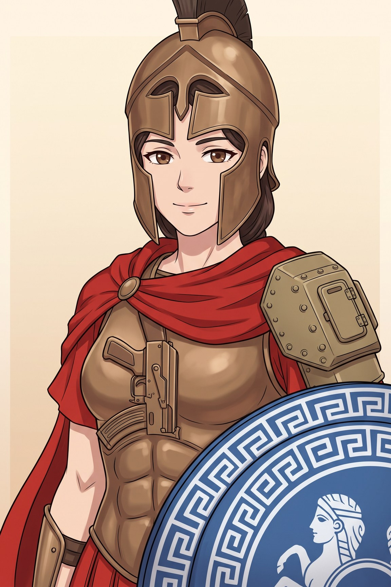
前800 · 陸Dory
希臘 · 陸
兩米長的木槍，槍尾帶銅套。方陣裡它比劍更早決定誰站得住。
Assyrian bow
義大利 · 陸
亞述人靠弓和鐵的組合征服兩河流域。弓兵在車上射，車兵靠弓兵開路。
Corinthian helmet
希臘 · 陸
全正面開眼的青銅盔。看得見的代價是：戴它的人只能靠隊形活。
Hoplite
希臘 · 陸
方陣的重心不是個人，是互相遮蔽。盾牌接在一起時，一支軍隊的正面比一個人結實。
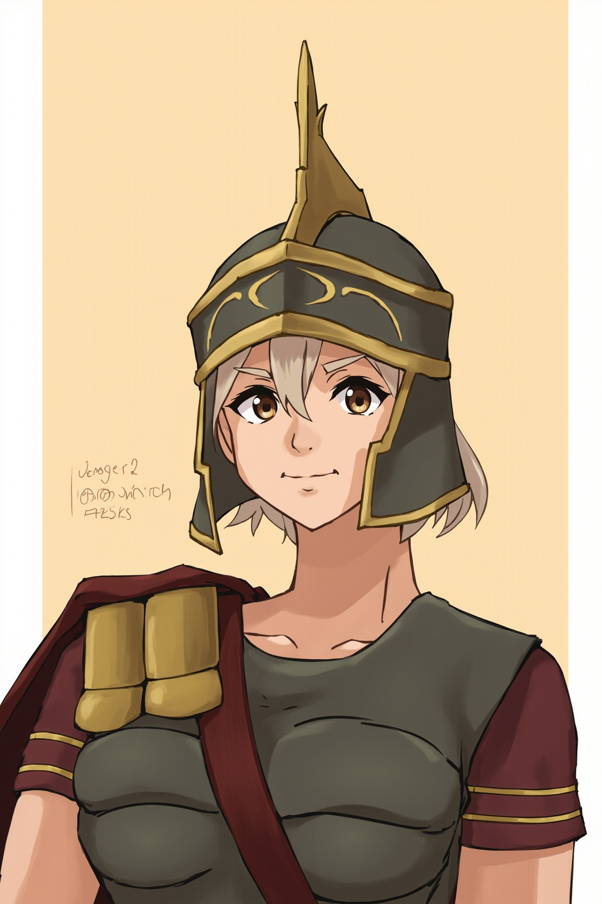
前250 · 陸Onager
義大利 · 陸
把絞盤的勢能換成一塊石頭。攻城從此有了可以計算的破壞力。
Chinese crossbow
中國 · 陸
弩機把拉力存起來，射速遠勝拉弓。守城的一方靠它把攻城的人壓在牆外。
Repeating crossbow
中國 · 陸
弩機把拉力存起來，一踩一發。守城的一方靠它把攻城的人壓在牆外。
Scutum
義大利 · 陸
凸面的長方盾。羅馬的防線靠盾緣咬住盾緣，不是靠盾牌多厚。
Legionary
義大利 · 陸
分段鎧甲配重盾。羅馬的戰力靠的是補充兵源與補給線，不是靠重裝。
Gladius
義大利 · 陸
刺劍不是用來揮砍的。短兵相接靠的是盾的邊緣和刺突的節奏。
Pilum
義大利 · 陸
半米長的投槍，槍幹中空。捅穿盾之後就折斷，敵人只能帶著半截槍退回掩體。
Scorpio
義大利 · 陸
扭力弩砲，一發一具箭。羅馬用它拆掉希臘的城牆，也拆掉了希臘的城邦體系。
Greek fire
義大利 · 陸
配在銅管裡的燃燒劑。配方是帝國的機密，配方和船一起沉了。
Lombard shield
義大利 · 陸
又長又窄的騎士盾，能遮住整個身體，也能讓騎兵把盾固定在臂上。
宋制霹靂砲
中國 · 陸
霹靂砲位於宋代遠程火力體系，以爆炸作用攻擊城防、人員與器材，通常配置於攻城或守城陣列，與弓弩及砲石相互配合。
澶州之戰
Dane axe
英國 · 陸
刃很長，斧面窄。北歐的船隊帶著它，也帶著它上岸。
Crossbow
英國 · 陸
弩把射速交給了機械，代價是裝填慢。城牆上它比長弓可靠，野戰裡它比長弓脆弱。
Contostephano
義大利 · 陸
帝國的騎兵用它的頸甲，槍身短而重，衝鋒靠的不是速度而是馬的重量。
Trebuchet
義大利 · 陸
長臂配重把石頭甩過城牆。工程比攻城武器更早決定勝負。
Shenbi crossbow
中國 · 陸
以絞弦張臂的強弩，一發穿重甲。宋的邊軍靠它守住了自己的邊界。
Springald
義大利 · 陸
把扭力儲在絞盤裡的攻城弩。攻城方第一次有了能打穿城門的東西。
Hand cannon
中國 · 陸
第一支能重複使用的火器。它改變了城牆的價錢，也改變了守軍的膽量。
Yew longbow
英國 · 陸
英格蘭的箭袋比法國的騎兵便宜。弓手的訓練要一整年，徵召卻只要一天。
Huolongpao
中國 · 陸
竹筒與鐵砲身。它把火藥從爆炸品變成了射程內的火力。
Pavise
義大利 · 陸
一人半高的木牆，立在弩手前面。攻城方的最後一段距離靠它頂住。
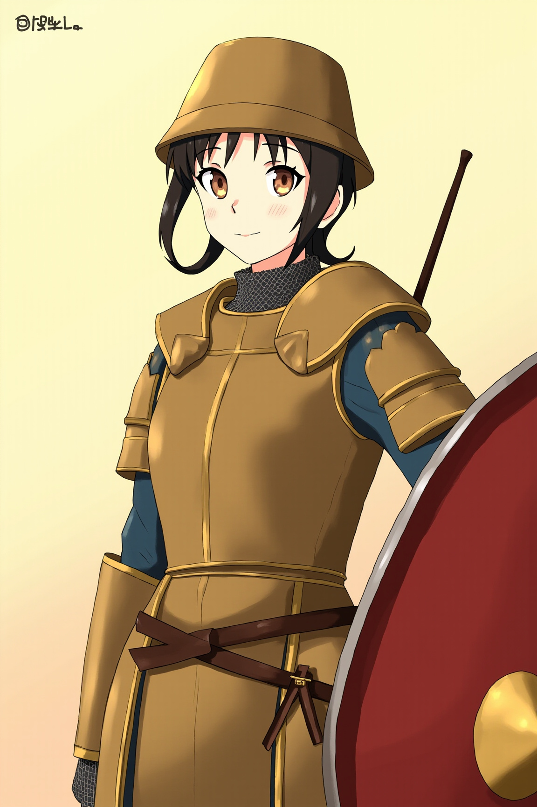
1449 · 陸Mons Meg
英國 · 陸
蒙斯梅格屬於英格蘭王國的重型攻城臼炮，歸入王室攻城砲兵，部署於圍城陣地，主要任務是攻擊城牆及堡壘。
第三次莫斯科-立陶宛戰爭
Poleaxe
英國 · 陸
頂端有刃、側面有鉤的長柄兵器。穿甲靠鉤，砍腿靠刃。
Wheellock pistol
西班牙 · 陸
最早的後膛手槍。機械太貴，只給火槍隊的軍官與近衛。
Wheellock pistol
西班牙 · 陸
最早的後膛手槍。機械太貴，只給火槍隊的軍官與近衛。
俄國-波斯戰爭
Wheellock pistol
西班牙 · 陸
最早的後膛手槍。機械太貴，只給火槍隊的軍官與衛兵。
Matchlock musket
西班牙 · 陸
火繩槍要點火、要瞄、要排隊。方陣把這些弱點變成了整齊的彈幕。
Spanish tercio shield
西班牙 · 陸
一面方盾撐住一整排人。無敵兵團的方陣靠它，也靠後面那排火繩槍。
Cuirass
西班牙 · 陸
鍛鐵的胸甲讓步槍變成冷兵器。馬爾康·波佐多的改變比任何一場戰役都快。
Tanegashima matchlock
日本 · 陸
葡萄牙人帶到種子島的一支火繩槍，幾個月內就造出了幾萬支。
Arquebus
西班牙 · 陸
比步槍輕的長槍。西班牙人帶著它上船，也帶著它進了美洲。
Field gun
西班牙 · 陸
能拆成幾件馬車拉走的砲。它讓野戰第一次有了可以計算的砲火。
Swiss pike
義大利 · 陸
長槍密集如林，後面才是火槍。瑞士人靠它僱傭自己去打仗。
Pike
西班牙 · 陸
方陣的長矛讓火槍隊站在後面。密西西比之後，長矛和火槍一起站住了。
Naval culverin
英國 · 海
能打穿船板的長身管砲。它的重心決定了船能裝多少門，也決定了船能走多遠。
Man-of-war
英國 · 海
一艘船上的炮比一整座要塞還多。風、帆和火炮的計算從此綁在一起。
Ottoman musket
鄂圖曼 · 陸
帝國的兵廠自己造的火槍。蘇丹的軍隊用歐洲的技術，用自己的爐子。
Flintlock musket
英國 · 陸
擊錘打火比火繩穩。線性列陣的射速和精度都靠它撐著。
Pattern 1757 Musket
英國 · 陸
一七五七年式步槍是英國陸軍線列步兵的制式火槍，配置於步兵連與營的射擊單位，屬於步兵部隊的基本地面槍械。
橘子戰爭
Bayonet
法國 · 陸
插在火槍上的短刀。它讓火槍兵在裝填的間隙裡仍然算得上一名士兵。
Fusil d'infanterie modèle 1777
法國 · 陸
它是法國陸軍步兵連的制式步槍，作為步兵日常作戰的核心火器，與騎兵、砲兵及攻城武器分屬不同裝備體系。
反法同盟戰爭
Pattern 1795 Musket
英國 · 陸
一七九五年式滑膛槍是英國陸軍步兵的制式火槍，廣泛配屬英軍各步兵營與東印度公司步兵，並與步槍單位的來福槍分列使用。
第二次馬拉塔戰爭
USS Constitution
美國 · 海
隸屬美國海軍，屬早期大型帆船巡航艦兵力，負責遠洋航行、商船護航與戰區封鎖，並可搭載艦載火炮執行海上作戰。
第一次巴巴利戰爭
Percussion rifle
法國 · 陸
雷管取代火燧之後，底火在霧裡也打得響。射程變長，隊形就散了。
Minié ball rifle
法國 · 陸
圓錐形爆炸彈配膛線步槍。射程翻了幾倍，野戰隊形從此再回不去。
Muzzle-loading field gun
德國 · 陸
線膛讓同樣的藥量走得更遠。砲兵第一次可以在射程上贏步兵。
Enfield rifle
英國 · 陸
英軍的制式步槍。克里米亞的教訓是：射程和後膛比勇敢更早決定勝負。
Gatling gun
美國 · 陸
六根管子用人力轉動。它的後坐力分散在六次上，所以能壓住一個師。
Ironclad
英國 · 海
木殼外面包了鐵。裝甲第一次比砲更難對付，砲塔的設計從此繞著它轉。
Sharps rifle
美國 · 陸
後膛、落膛、偏心擊發。它在南部合眾國的騎兵手上打出過三百發一分鐘。
Steam ironclad
英國 · 海
蒸汽機加鐵甲。战舰第一次不靠帆吃風，港口裡的煤比海上的風更決定戰局。
Berdan rifle
蘇聯 · 陸
別丹式步槍，帶鋼製襯套。它是俄國後膛槍的第一次嘗試，也是第一次失敗。
Breech-loading cannon
德國 · 陸
螺式後膛讓砲位不必整門退回去。射程和射速一起進步，砲兵開始比步兵先到。
Winchester Model 1873
美國 · 陸
槍管後膛與壓下槓桿的擊發。它便宜到西部每個牧人都買得起。
Torpedo boat
英國 · 海
小船帶著一枚雷衝進大艦的肚子。戰列艦的價格第一次被一種沒有装甲的東西威脅。
Lebel / Berthier
法國 · 陸
法國一戰步兵的底色。單兵射速打不開鐵絲網，缺口要靠砲兵與鐵路送來的預備隊。
管狀彈倉
Gew 88
鄂圖曼 · 陸
德國於1888年定型的委員會步槍，後續由德軍以Gew 98替換後大量軍援鄂圖曼帝國。鄂圖曼軍於一戰結束後將其移交土耳其國民軍，土耳其共和國成立後繼續改良使用，服役期延伸至1940年代前後，於土耳其獨立戰爭期間為民族主義部隊可見的制式栓動步槍之一。
土耳其獨立戰爭
M1888
德國 · 陸
德國1888年研製的栓式步槍，清末引進，廣泛配用於中國內戰。
護國戰爭
Canon de 75 modèle 1897
法國 · 陸
液壓駐退讓射速遠超舊砲。馬恩河的勝算裡有它，也有把砲運到對的車站的鐵路。
快砲
Gewehr 98
德國 · 陸
德軍一戰制式步槍。精準，但班的火力來自機槍，不是排隊齊射。
五發栓動
M1903 Springfield
美國 · 陸
美國一戰栓動步槍。遠征軍大量使用，班火力仍靠機槍。
Type 38 rifle
日本 · 陸
日軍主力步槍，口徑較小、後坐低。工業規模不足以同時餵飽陸軍與艦隊。
7.7 cm FK 96 n.A.
德國 · 陸
德軍一戰野砲。康布雷時專門反戰車砲還沒成體系，戰車多半死在野砲、機槍與故障。
直瞄的答案
HMS Dreadnought
英國 · 海
1906 年全重砲戰列艦。把舊戰列艦一次性變成次級，一戰時自己已過時。
No. 1 Mk III
gb · 陸
該步槍是英國在第一次世界大戰中的主力栓式步槍，於愛爾蘭獨立戰爭期間被英軍與愛爾蘭武裝廣泛使用。
愛爾蘭獨立戰爭
SMLE Mk III
gb · 陸
英軍於1907年採用此步槍，裝備步兵與支援單位，廣泛用於一次大戰。
復活節起義
SMLE / Lee-Enfield
英國 · 陸
英聯邦制式步槍，十發彈倉讓班排射速很高。步兵仍要靠砲與戰車打開鐵絲網。
十五發的節奏
MG 08
德國 · 陸
馬克沁機槍的德軍型。索姆河與馬恩河以後，步兵衝鋒先要解決的是它的彈藥與射手，不是旗幟。
鐵絲網的夥伴
Colt M1911
美國 · 陸
0.45 口徑半自動手槍。一戰到越戰都在美軍副武器名冊上。
HMS Lion
英國 · 海
比蒂的戰巡旗艦。日德蘭 Q 砲塔起火，因為艙門與裝藥紀律沒有演成胡德那種殉爆。戰巡的賭注是速度換裝甲。
戰巡旗艦
Vickers .303
英國 · 陸
作為英國軍的標準中型機槍，維克斯.303在一次大戰與後續衝突中被廣泛使用，以其水冷式結構提供持續火力支援，成為步兵與火力支援的主力裝備。
查科戰爭
Mod. 1914
義大利 · 陸
作為義大利第一款制式氣冷重機槍，與步兵連協同作戰，主要配備於前線火力點，提供持續壓制火力。
第七次伊孫佐戰役
Fiat Revelli Mod. 1914
義大利 · 陸
作為意大利軍第一款大量裝備的自動機槍，菲亞特·雷維利Mod.1914在步兵班提供持續火力，並被裝甲車與固定據點廣泛使用。
伊孫佐戰役
SMS Derfflinger
德國 · 海
德國戰列巡洋艦。日德蘭被重擊仍駛回威廉港。同一天，幾艘英國戰巡死於彈藥庫，不是死於慢慢掉光的船體輪廓。
還開得回港
HMS Warspite
英國 · 海
伊莉莎白女王級。參加日德蘭，二戰再經地中海與諾曼第艦砲支援。長壽來自現代化改裝與還能開的輪機。
從日德蘭到諾曼第
Fokker E.III
德國 · 空
射過螺旋槳的機槍同步。1915 年的優勢很短，協約國很快有對策。
Nieuport 17
法國 · 空
1916 年西線常見的協約國戰鬥機。空戰此時開始決定砲兵觀察員能不能活著回報彈著。
上單翼的機關槍
Mark I
英國 · 陸
1916 年 9 月索姆河首次投入。菱形車體為了越壕。到達敵陣前，機械故障淘汰的數量不比砲火少。
過壕的菱形
Mark IV
英國 · 陸
一戰英軍產量最高的菱形戰車。康布雷證明集中使用能撕開防線，也證明沒有步兵與補給時缺口會重新合上。
康布雷的主體
SPAD S.XIII
法國 · 空
協約國後期主力戰鬥機之一。空戰開始決定地面砲兵能不能活著觀察。
上翼的機關槍
Renault FT
法國 · 陸
一戰量產輕戰車。可旋轉砲塔成為後來戰車的基本語法，而不是移動碉堡。
旋轉砲塔的祖先
FT
法國 · 陸
雷諾FT輕坦克是第一款採用旋轉炮塔與履帶底盤的輕型坦克，1917年法國研製後廣泛用於一戰，並在1930年代被中國軍閥引進，成為當時重要的機械化裝備。
中原大戰
Sopwith Camel
英國 · 空
旋轉發動機讓它向右急轉很狠，也讓新手容易進入螺旋。戰果與訓練事故是同一架飛機的兩面。
引擎的陀螺
Medium Mark A Whippet
英國 · 陸
一戰中型坦克，為追擊而不是越壕。1918 年亞眠以後才有用武之地。
Sturmpanzerwagen A7V
德國 · 陸
德國一戰少量超重突擊車，乘員擁擠，越壕能力差。數量從來沒有贏過結構。
會動的箱子
M1918 BAR
美國 · 陸
白朗寧自動步槍。一戰來不及大規模使用，二戰成為班用自動武器。
MP 18
德國 · 陸
一戰末期衝鋒槍。為壕內近戰，不是替代步槍的主武器。
HMS Hood
英國 · 海
戰間期最大的戰列巡洋艦，象徵帝國，水平防護不足。1941 年 5 月 24 日丹麥海峽一戰，彈藥庫殉爆，三分鐘沉沒。
裝甲帶的缺口
M1928 Thompson
美國 · 陸
0.45 衝鋒槍。二戰由陸戰隊與傘兵大量使用，重而且貴。
IJN Akagi
日本 · 海
由戰巡艦體改建的航艦。珍珠港的攻擊核心之一，中途島被無畏式命中，誘爆與火災導致沉沒。
八九式 I-Go
日本 · 陸
作為日本帝國陸軍首款大規模生產的中型戰車，於1932年的一二八事變中投入上海戰場，提供機動火力支援。
一二八事變
kbk wz. 29
法國 · 陸
波蘭以毛瑟系統生產的步槍。1939 年的問題不是勇敢，是對手的空地協同與時間。
Mosin-Nagant M1891/30
蘇聯 · 陸
蘇聯及多國使用的舊式步槍，便宜、耐用、數量驚人。人力是資源，也是消耗。
KP/-31
fi · 陸
1931年列裝後，索米衝鋒槍成為芬蘭步兵的主要近戰武器，冬季戰爭期間廣泛配屬於步兵班與滑雪兵，用於近距離火力。
冬季戰爭
T-26
蘇聯 · 陸
維克斯 6 噸的蘇聯發展型。西班牙內戰與諾門罕的主力輕坦。
TK-3
法國 · 陸
波蘭超輕偵察車，機槍為主。1939 年面對德軍時，偵察不等於防線。
Boeing P-26 Peashooter
美國 · 空
美軍第一種全金屬單翼戰鬥機，到二戰爆發已過時。孤立主義時期的家底就是這個速度。
Polikarpov I-16
蘇聯 · 空
1930 年代很先進的單翼機，西班牙內戰到蘇德戰爭初期仍在飛。爬升與火力逐步落後Bf 109。
HSwMS Gotland
瑞典 · 海
瑞典水上飛機巡洋艦。1941 年 5 月 20 日發現俾斯麥編隊，情報輾轉傳到英國。中立國的眼睛也是戰場的一部分。
看見俾斯麥的人
Ha-Go
日本 · 陸
1935年已列裝的日本輕戰車，抗日戰爭期間配屬在華地面部隊，用於步兵支援與短促機動。
抗日戰爭
Karabiner 98k
德國 · 陸
德軍最普遍的手動步槍。精準，射速受限，勝利靠的是與機槍、砲、戰車的編組。
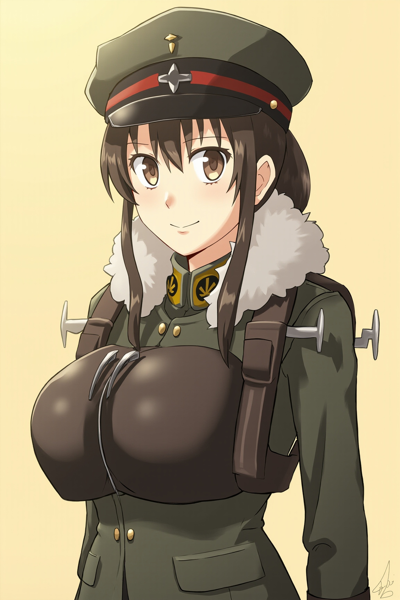
1935 · 空B.R.20
義大利 · 空
菲亞特B.R.20是義大利空軍在1930年代中期引進的雙發動機中型轟炸機，隸屬於轟炸航空團，主要負責對敵方縱深目標的轟炸與戰術支援。
第二次義埃戰爭
BT-7
蘇聯 · 陸
快、薄、砲小。它的懸吊與車體思路會流向 T-34，但 1939–41 的它擋不住後續的穿甲彈。
克里斯蒂懸吊
L3/35
義大利 · 陸
超輕戰車／機槍載具，數量多、防護極弱。它說明「有裝甲」和「有戰車兵種」不是同一件事。
Mitsubishi A5M
日本 · 空
日本海軍第一種單翼艦載戰鬥機。零戰的前代，輕、靈，幾乎沒有防護。
Pz.Kpfw. II
德國 · 陸
戰前與戰爭初期的偵察輕戰車，20 公厘砲。閃擊戰前期它仍在一線，因為中型車不夠。
8.8 cm Flak 36
德國 · 陸
高射砲被拉平打戰車，是應急也是砲術。它強，但陣地固定時很怕砲兵與飛機。
平射的高射砲
M1 Garand
美國 · 陸
美軍半自動步槍，八發彈夾。單兵火力上升，仍然喂不飽一場沒有油的裝甲戰。
Char B1 bis
法國 · 陸
裝甲厚、車體 75 砲加砲塔 47 砲。單人砲塔讓車長過載——結構問題，不是士氣問題。
MAS-36
法國 · 陸
MAS‑36是法國軍隊在二戰期間採用的標準栓式步槍，採用7.5mm口徑，於步兵班中作為主要單兵武器，提供中距離精確射擊能力。
阿爾及利亞戰爭
Type VII U-boat
德國 · 海
大西洋噸位戰的主力艇。早期缺口是盟軍護航與雷達，後期是超長程飛機、護衛航艦與破解恩尼格瑪後的獵殺。
噸位戰
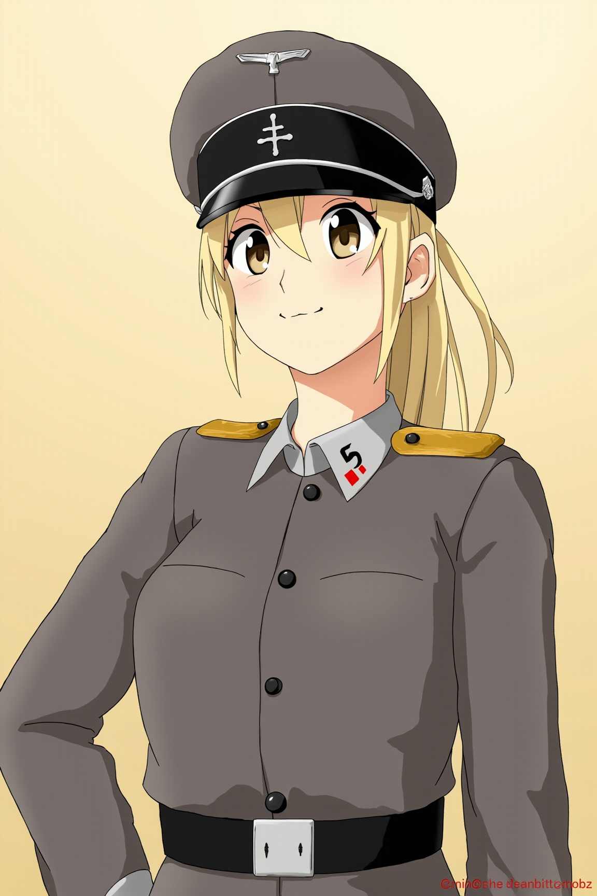
1937 · 陸Panzer III
德國 · 陸
原本的反坦克主力。50 毫米砲在 T-34 面前不夠，後來讓位給四號長砲。
Panzerkampfwagen IV
德國 · 陸
四號坦克是德軍在二戰初期的主力中坦，負責支援步兵與對抗敵方裝甲，並參與閃擊戰術的實施。
波蘭戰役
Dunkerque
法國 · 海
法國高速戰列艦，主砲前置。1940 年凱比爾港遭英軍攻擊重創——盟友的砲口有時對準同一邊。
Ju 87 Stuka
德國 · 空
精確俯衝轟炸機，沒有制空權時非常脆弱。不列顛之戰證明：沒有戰鬥機保護的俯衝只是排隊損失。
Hawker Hurricane
英國 · 空
不列顛之戰擊落數多於噴火。結構較傳統、好修，常被派去打轟炸機。
Messerschmitt Bf 109 G
德國 · 空
德國產量最大的戰鬥機，爬升與火力強，起落架窄、航程短。不列顛之戰裡航程比勇氣先耗盡。
Type 97 Chi-Ha
日本 · 陸
日軍主力中戰車，初期夠用，對上謝爾曼與 T-34 時砲與裝甲都落後。陸軍資源永遠排在艦隊後面。
USS Enterprise CV-6
美國 · 海
約克鎮級。中途島、東所羅門、聖克魯斯與之後几乎所有太平洋艦隊行動都有她。倖存是損傷管制與美國補艦能力，不是幸運咒語。
大 E
B-17 Flying Fortress
美國 · 空
四引擎日間轟炸機。自衛槍塔沒有取代護航。無護航的深遠突襲在 1943 年損失難以維持。
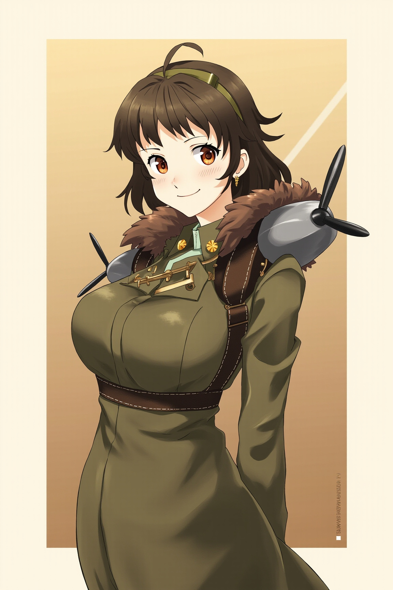
1938 · 空Supermarine Spitfire Mk IX
英國 · 空
橢圓翼與梅林發動機的截擊機。Mk IX 用來對付 Fw 190 的性能壓迫。它贏的是本土防空網，不是單機神話。
Morane-Saulnier M.S.406
法國 · 空
1940 年法國數量最多的戰鬥機，性能已落後 Bf 109。產量沒有換成制空權。
T-34/76
su · 陸
1939年列裝蘇聯紅軍，1941年廣泛配屬於東歐機械化師團。
蘇德戰爭
RN Littorio
義大利 · 海
維托里奧·維內托級。火力與速度出色，燃油短缺與缺乏雷達、夜戰訓練限制了出航。
DKM Bismarck
德國 · 海
萊茵演習擊沉胡德，舵機隨後被魚雷打壞，1941 年 5 月 27 日被圍殲。單艦質量補不回燃油、偵察與空中掩護。
一次出擊
Grumman F4F Wildcat
美國 · 空
美國海軍早期艦戰。機動不及零戰，但有裝甲、自封油箱與俯衝加速，配合薩奇剪仍能交換。
SBD Dauntless
美國 · 空
中途島擊沉日本航艦的主力俯衝轟炸機。慢，但在正確的時間窗口裡決定艦隊決戰。
A6M2 Zero
日本 · 空
航程與水平機動極佳，無自封油箱、裝甲極薄。中途島之後面對有裝甲與俯衝速度的對手，優勢逆轉。
航程換裝甲
Carro Armato M13/40
義大利 · 陸
義大利北非主力中戰車。柴油引擎適合沙漠，鉚接裝甲與砲力在中後期不足。
MP 40
德國 · 陸
9 毫米衝鋒槍。配給班長與裝甲兵，德軍主武器仍是毛瑟步槍。
T-34
su · 陸
T-34是蘇聯在二戰中期部署的主力中型坦克，以傾斜裝甲與76公厘炮提升生存性與火力，成為蘇軍突破防線的骨幹。
繼續戰爭
IJN Yamato
日本 · 海
九門 460 公厘，排水與油耗都是艦隊的黑洞。1945 年天一號作戰赴沖繩，在沒有制空權時被艦載機擊沉。大艦巨砲輸給飛機與燃油。
燃料巨獸
Karl-Gerät 040
德國 · 陸
600 公厘自走臼砲，用來打塞瓦斯托波爾等要塞。戰略機動幾乎為零，沒有鐵路與工兵就只是一座倉庫。
要塞專用
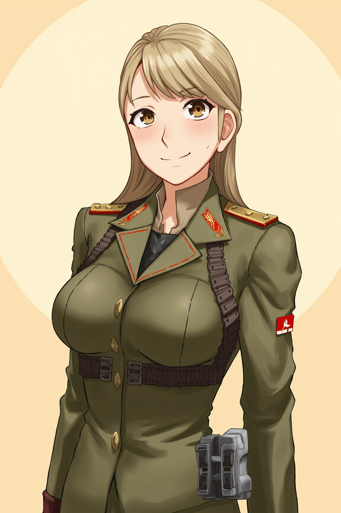
1941 · 空Ilyushin Il-2
蘇聯 · 空
裝甲攻擊機，產量極大。早期後座機槍缺失付出過慘重代價——「飛行坦克」仍會被戰鬥機從上方打死。
飛行的砲兵
M3 Lee
美國 · 陸
車體 75 毫米砲加砲塔 37 毫米。過渡車，北非與租借給蘇聯。
PPSh-41
蘇聯 · 陸
7.62 毫米衝鋒槍。彈鼓供彈，東線近戰的標誌，不是戰車殺手。
Infantry Tank Mk IV Churchill
英國 · 陸
步兵戰車：厚、慢，用來伴隨徒步步兵。穿深要看砲型，車體本身是移動掩體。
BM-13
蘇聯 · 陸
卡車載多管火箭，射速猛、精度差、簽名暴露陣地。它打擊的是區域與士氣，不是單輛虎式的正面。
面積，不是精確
Gato class
美國 · 海
太平洋潛艦。切斷日本油輪與運輸船，比單艦對決更決定戰爭。
M3
美國 · 陸
M3 Stuart為二戰期間廣泛使用的輕型坦克，具備高速機動與可靠火力，主要用於偵察、快速突破及支援步兵，是美國裝甲兵力的骨幹之一。
第一次蘇丹內戰
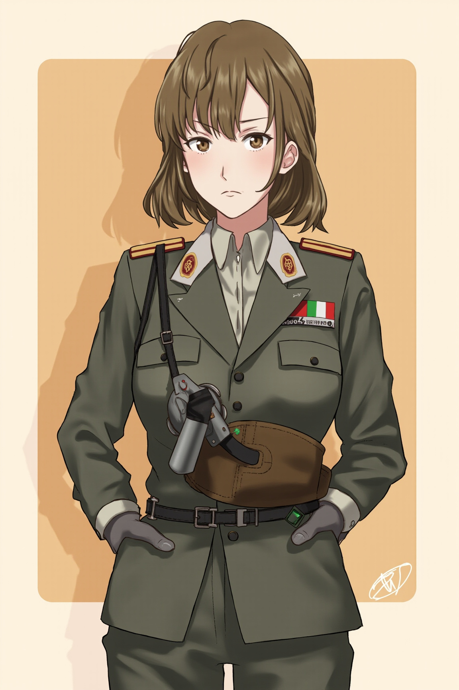
1941 · 空Macchi C.202 Folgore
義大利 · 空
義大利最好的量產戰鬥機之一，機動優秀，火力與後期產量不足。
Curtiss P-40
中國 · 空
中國戰場與美國志願大隊的標誌機。低空頑強、高空乏力。外援飛機改變戰術，不自動贏得戰爭。
飛虎隊的工作機
Fletcher class
美國 · 海
太平洋驅逐艦主力。防空、反潛、魚雷都做，損失也大。
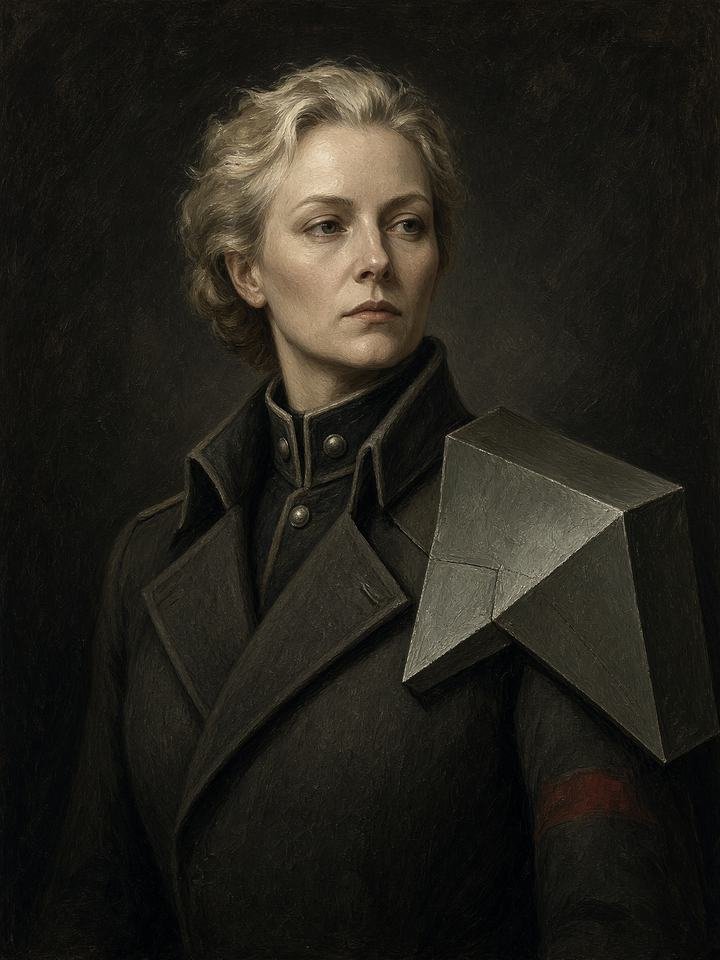
1942 · 陸Pz.Kpfw. VI Tiger I
德國 · 陸
88 公厘 KwK 36 穿深極高，重量帶來機械故障與油耗。市面故事常把它編成黨衛軍車長神話；這裡不收那套崇拜，只保留車輛本身的厚、慢與難以後送。
厚重的故障
P-47 Thunderbolt
美國 · 空
星型引擎與 8 挺 12.7 毫米。高空護航，也做戰鬥轟炸。
M4 Sherman
美國 · 陸
可靠、好修、數量大，後期 76 公厘與螢火蟲等改裝補穿深。單車對虎常吃虧，師的妥善率則相反。
開得動的戰爭
M4
美國 · 陸
M4謝爾曼是二戰期間美國大量生產的中型坦克，以火力與機動性兼備著稱，成為盟軍裝甲兵力的骨幹。
第一次中東戰爭
M4A1
美國 · 陸
M4A1雪曼坦克是二戰期間美國主力中型坦克，後來退役或轉讓至盟友，1965年巴基斯坦軍隊在印巴戰爭中將其作為裝甲突擊骨幹使用。
第二次印巴戰爭
Pz.Kpfw. IV Ausf. H
德國 · 陸
長管 75 公厘的四號是德軍真正的數量支柱。虎式上新聞，四號在撐戰線。
工作馬
Iowa class
美國 · 海
9 門 406 毫米，能跟上航母。二戰護航，冷戰與 1991 年再服役。
FFVS J 22
瑞典 · 空
瑞典因買不到足夠外國戰鬥機而自製。性能對上早期軸心戰機可一戰，工業背景是中立國的緊急狀態。
Stridsvagn m/42
瑞典 · 陸
瑞典戰時自製中戰車，短管 75 砲。中立國的戰車是武裝中立的價錢，不是遠征的數量。
Cromwell
英國 · 陸
流星引擎讓它快。75 毫米砲對虎式仍吃力，諾曼第用來擴張突破口。
Me 262
德國 · 空
噴射戰鬥機。1944 年才形成部隊，油料與發動機壽命限制出擊。
P-51D Mustang
美國 · 空
梅林發動機與層流翼讓它把護航做到柏林。1944 年戰略轟炸的轉折是護航距離，不只是投彈噸位。
護航才是戰略
IS-2
蘇聯 · 陸
122 毫米砲。射速慢，專門打重坦與工事，不是數量主力。
M26
美國 · 陸
1944年列裝的美軍重型坦克，韓戰期間配屬地面部隊，用於近距火力支援與對抗對方中型坦克。
韓戰
M4A3E8
美國 · 陸
1944年列裝的美軍中型坦克後期型，配屬太平洋登陸部隊，負責近距火力支援與突破岸防工事。
太平洋戰爭
Sturmgewehr 44
德國 · 陸
中間威力彈的突擊步槍。1944 年才列裝，改變不了當年的油料。
T-34-85
蘇聯 · 陸
85 公厘砲改善對虎式與豹式的劣勢。斜面裝甲與可量產性，比任何單車決鬥更決定東線。
斜面與數量
Centurion
英國 · 陸
趕不上二戰歐洲戰場。冷戰成為多國主力，以色列也大量使用。
SKS
蘇聯 · 陸
半自動步槍。大量生產在戰後，隨後被 AK 系取代為主武器。
T-54
蘇聯 · 陸
100 毫米砲。戰後產量極大，出口比任何二戰坦克都廣。
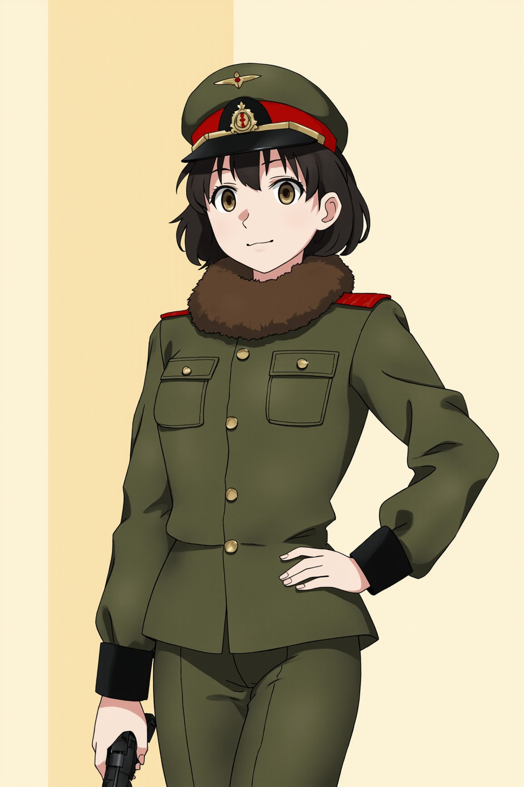
1949 · 空MiG-15
蘇聯 · 空
後掠翼噴射戰鬥機。朝鮮空戰裡它壓過直線翼的一代，也被有雷達槍瞄的 F-86 交換。
F-86 Sabre
美國 · 空
北美的後掠翼噴射機。交換比常被講成神話，雷達瞄準和飛行員經驗是可以核對的部分。
AK-47
蘇聯 · 陸
突擊步槍。寬容的公差讓它在泥裡還能響，步兵火力從栓動步槍轉成中間威力彈。
F-86F
美國 · 空
F-86F是美國空軍早期單座後掠翼噴氣戰鬥機，憑高速性能與俯衝能力擔任制空、攔截及對地支援，主要編入空軍戰鬥機聯隊。
孟加拉國解放戰爭
M48
美國 · 陸
M48是美國陸軍二戰後標準中型坦克體系的正式型號，擔任裝甲營主力，負責以主砲支援步兵、對抗裝甲目標並在機動作戰中推進占領。
第三次中東戰爭
AMX-13
法國 · 陸
1953年列裝法軍，1956年配屬於投入蘇伊士運河區的法國裝甲單位。
第二次中東戰爭
FN FAL
英國 · 陸
7.62 毫米戰鬥步槍。英國的 L1A1 是它的特許型，冷戰多國制式。
Uzi
以色列 · 陸
開放槍機衝鋒槍。以色列制式近戰武器，不是主戰步槍。
B-52
美國 · 空
1955 年服役的戰略轟炸機，靠掛架和航電改裝活到二十一世紀。機體老，任務變了。
Type 56
中國 · 陸
1956年列裝的中國制式突擊步槍，1962年中印邊境戰爭期間配屬入藏與新疆方向的步兵部隊，用於山地近戰。
中印邊境戰爭
殲-6
中國 · 空
殲-6是人民空軍早期的主力制空戰鬥機，主要承擔高空攔截與空域防衛任務，並與其他戰鬥機共同構成邊境方向的空中防線。
中越戰爭
T-55
su · 陸
T-55是蘇聯第二代中型戰車，設計用於提供可靠的火力與裝甲支援，於冷戰期間大量裝備蘇聯及受援國家，成為地面部隊的主力裝甲平台。
埃塞俄比亞-厄立特里亞戰爭
59式
中國 · 陸
59式中型坦克是中國人民解放軍陸軍裝甲兵的第一款國產中型主戰坦克，承擔正面突擊與裝甲支援任務，是當時陸軍機械化部隊的重要骨幹。
中蘇邊界衝突
Type 59
中國 · 陸
中國人民解放軍機械化步兵師與裝甲師的主力中型坦克，承擔機動作戰、火力支援及反裝甲任務，並作為友好國家裝甲部隊的制式裝備。
烏干達-坦桑尼亞戰爭
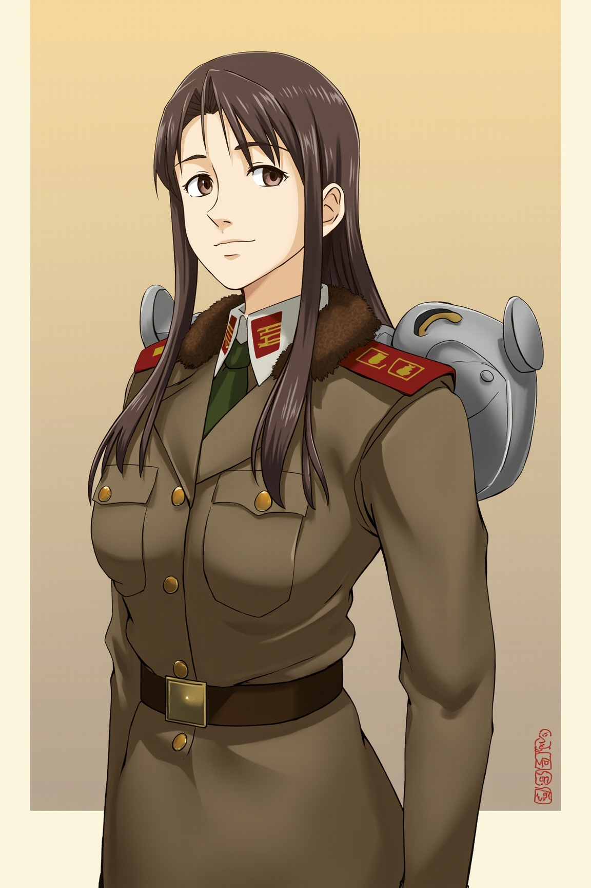
1959 · 空MiG-21
蘇聯 · 空
三角翼點防禦機。出口極廣，越戰與中東都出現。
HK G3
德國 · 陸
滾輪延遲的 7.62 步槍。西德戰後制式，出口多於任何虎式。
M14
美國 · 陸
想取代加蘭德與 BAR。全自動在步槍手裡難控，很快讓位給 M16。
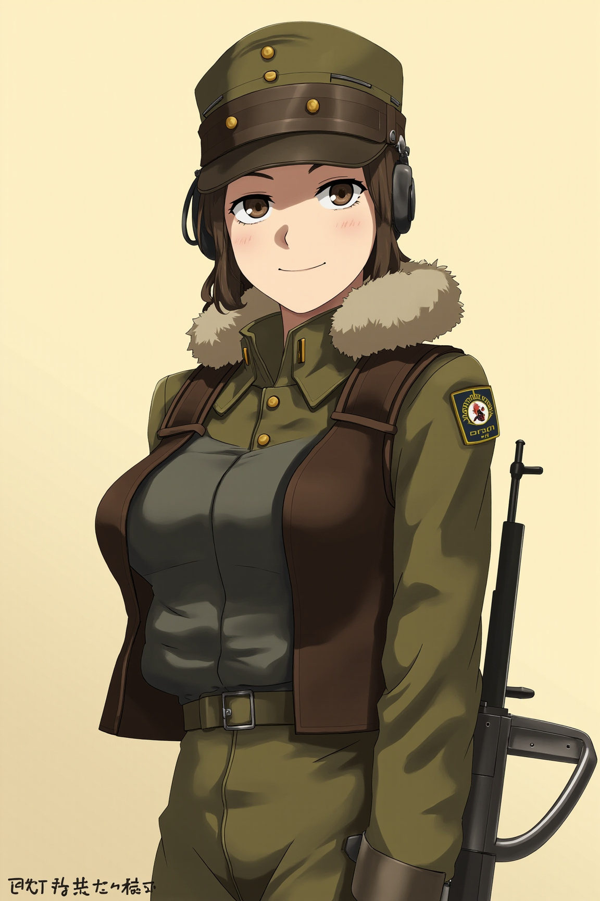
1959 · 空UH-1
美國 · 空
UH-1為美軍首款大批量使用的戰術通用直升機，主要負責兵員與物資運輸、空中偵察及近距離支援任務，並成為越戰標誌性空中平台。
越南戰爭
F-4 Phantom II
美國 · 空
雙座雙發。早期沒有機砲，越戰後才把機砲加回來。
RPG-7
蘇聯 · 陸
肩射火箭筒。破甲靠彈頭，不是槍管。後噴要淨空。
T-62
su · 陸
T-62是蘇聯陸軍裝甲部隊的主戰坦克，部署於坦克部隊，負責正面突破、機動作戰與近距離火力支援，並配合步兵作戰。
蘇聯入侵阿富汗
M51 Super Sherman
以色列 · 陸
以色列以謝爾曼車體改裝法制 105 公厘砲，約 1962 年服役。它是二戰底盤的戰後生命，不是 1948 年的裝備。
戰後的 105
M16
美國 · 陸
小口徑高速彈。越戰初期的卡彈來自保養與彈藥，不是口徑本身有魔法。
Leopard 1
德國 · 陸
105 毫米 L7。西德選擇火力與機動，不跟重甲競賽。
BM-21 Grad
su · 陸
BM-21「Grad」是蘇聯陸軍炮兵體系中的122毫米多管火箭炮，負責提供較炮兵射程更遠的火箭火力，並與自行加榴炮共同構成縱深打擊能力。
納戈爾諾-卡拉巴赫戰爭
PKM
蘇聯 · 陸
7.62 毫米通用機槍。班組支援火力，靠彈鏈而不是彈匣。
LGM-30G
美國 · 陸
陸基洲際彈道飛彈，在遊戲裡只代表核威懾存在。不模擬爆炸，也不提供任何製造或運用細節。
威懾
051型
中國 · 海
051型是中國人民解放軍海軍水面艦艇部隊的導彈驅逐艦，執行編隊防空、反艦、警戒與護航，是早期海上防空作戰體系的骨幹。
西沙之戰
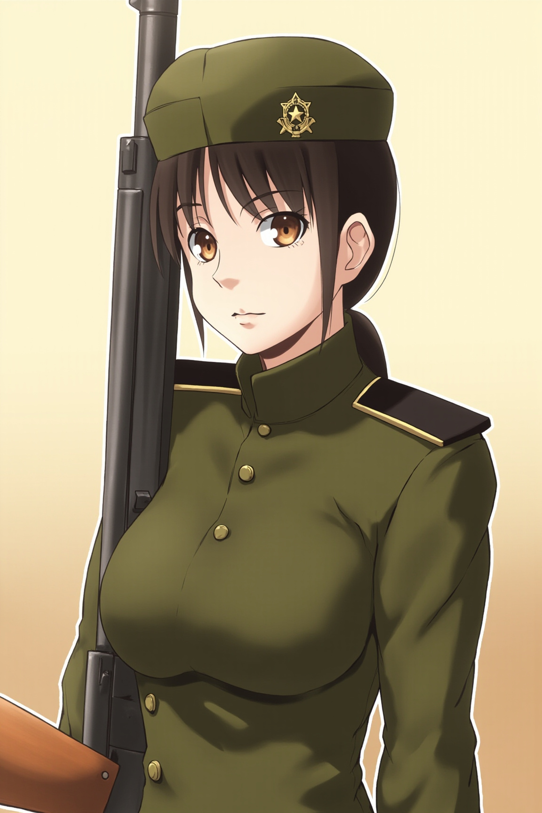
1971 · 陸M60A1
以色列 · 陸
1971年以色列自美國接收並列裝的M60A1，1973年配屬西奈與戈蘭方向的裝甲部隊，用於前線火力支援。
第四次中東戰爭
T-72
蘇聯 · 陸
大量生產的主戰戰車。自動裝彈機省下一個人，也讓車體內的彈藥成為被擊穿後的風險。
AK-74
蘇聯 · 陸
5.45 毫米。用更小口徑換可控性，結構仍是 AK 系。
F-16
美國 · 空
輕型多用途戰鬥機。電傳飛控讓它機動，掛載和數據鏈讓它留到四代半。
Merkava
以色列 · 陸
引擎前置，為乘員生存。按以色列地形與徵兵制設計。
M1 Abrams
美國 · 陸
燃氣渦輪與複合裝甲。1991 年的優勢同時是夜視、訓練與後勤，不是單車無敵。
Sea Harrier FRS.1
英國 · 空
1980 年列裝。福克蘭戰爭裡從無敵級航母短距起飛，爭的是艦隊上空那一小塊，不是阿根廷本土。
跳出來的制空
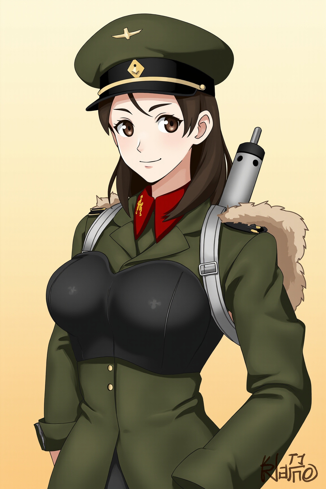
1980 · 空J-8 II
中國 · 空
J-8 II是中國人民解放軍空軍的單座全天候截擊機，編入航空兵師下屬殲擊機團，主要執行高空高速攔截、警戒與制空任務。
赤瓜礁海戰
M1
美國 · 陸
作為美國陸軍的主戰坦克，M1自1980年起服役，具備先進的複合裝甲與120公厘滑膛炮，為師級單位的突擊與防禦主力。
伊拉克戰爭
Ohio-class SSBN
美國 · 海
彈道飛彈潛艦。價值是不容易被一次打擊清掉。遊戲不模擬核爆。
威懾
T-72B
su · 陸
T-72B是俄羅斯地面部隊的主戰坦克，位於裝甲作戰核心，負責突破防線、護送步兵及提供機動火力，並與自走榴彈砲協同作戰。
俄羅斯入侵烏克蘭
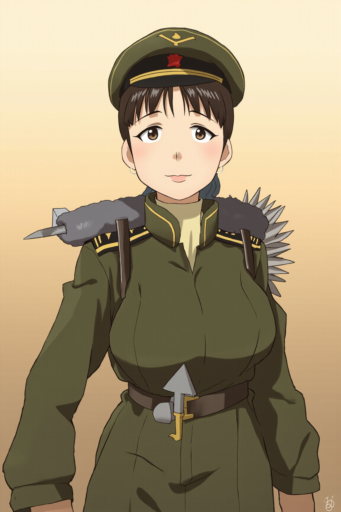
1985 · 空Su-27
蘇聯 · 空
遠程制空。為對付 F-15 的航程與雷達，不是對地主力。
BMP-2
su · 陸
蘇聯陸軍機械化步兵的核心裝甲載具，負責伴隨坦克輸送兵員，並以機炮提供伴隨步兵火力支援。
卡吉爾戰爭
M1A1
美國 · 陸
1985年列裝的美軍主力戰車，1991年地面作戰期間配屬聯軍裝甲部隊，用於前線突擊與對抗對方戰車。
波斯灣戰爭
Arleigh Burke
美國 · 海
神盾驅逐艦。防空與巡弋飛彈是主武力，不是艦砲對決。
M4 carbine
美國 · 陸
M16 的卡賓型。短管方便車內與城鎮，射程換機動。
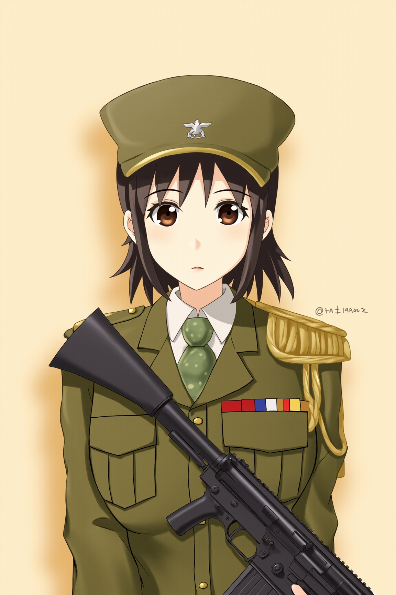
1994 · 陸M4
美國 · 陸
1994年定型，2001年部署至阿富汗山區，取代M16。
阿富汗戰爭
QBZ-95
中國 · 陸
5.8 毫米無托步槍。1997 年以後成為解放軍主要步枪之一。
Challenger 2
英國 · 陸
「挑戰者2」是英國陸軍的主戰坦克，隸屬裝甲部隊，負責正面突破、對抗敵方裝甲並占領要害地區，與步兵、工程車及後勤支援車輛協同作戰。
利比亞內戰
ZTZ-99
中國 · 陸
125 毫米滑膛。解放軍第三代主力，不是抗戰的九五式。
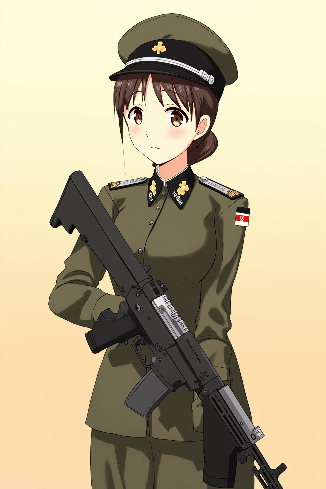
2004 · 陸HK416
德國 · 陸
短行程活塞的 5.56 卡賓槍。多國特種部隊列裝，不是全民兵主力。
M142 HIMARS
美國 · 陸
輪式多管火箭。它吃的是座標、彈藥和會不會被反砲兵找到，不是口號。
F-22 Raptor
美國 · 空
2005 年形成初始作戰能力。低可探測與超音速巡航，產量少。
MQ-9 Reaper
美國 · 空
遠端駕駛的察打無人機。依賴衛星鏈路和起降場。鏈路斷了，它就不是武器。
Type 052D
中國 · 海
有源相控陣驅逐艦。區域防空，垂發是主要彈艙。
F-35
美國 · 空
低可探測性與感測器融合。它貴，維修工時也算進戰鬥力。
殲-20
中國 · 空
中國列裝的低可探測戰鬥機。紙面外形不能代替掛載、數量、飛手和地面體系。
XQ-58A Valkyrie
美國 · 空
2019 年已試飛的僚機驗證機。軟體可以幫忙看畫面。它不是會自己決定開火的完成體。
試飛